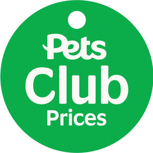

Trade Mark Journal No.2025/032 8 August 2025
UK00004233393 14 July 2025 (3,5,10,16,18,20,28,31,35,36,44,45)

- Class 3
- Shampoos and soaps; conditioners; spritzer sprays filled with toiletries, skin care preparations or fragrances for use on animals; cleansing and freshening wipes; toiletries; dentifrices; skincare preparations; fragrances; all the aforesaid goods for use on animals.
- Class 5
- Pharmaceutical and veterinary products and preparations for animals; disinfectants; medicated shampoos; animal washes and lotions and other grooming preparations; flea control products; flea collars; flea sprays; flea powders; preparation for destroying vermin; fungicides; insecticides; parasiticides; animal feed additives and supplements; absorbent diapers and disposable absorbent training pads for pets; nutritional supplements for animals (non-medicated); additives for animal foodstuffs not for medical purposes; all of the foregoing goods being for household pets and none of the foregoing goods being for livestock, including ruminants and horses.
- Class 10
- Surgical, medical, dental and veterinary apparatus and instruments; artificial limbs, eyes and teeth; orthopaedic articles; suture materials; therapeutic and assistive devices adapted for the disabled; massage apparatus; apparatus, devices and articles for nursing infants.
- Class 16
- Printed matter and publications; magazines; Ring press books; printed instructional materials relating to animals and pets, including pet care; indexed books for the recordal of information relating to pets; parts and fittings for all the aforesaid goods.
- Class 18
- Pet collars and leads; coats and clothing for animals; back packs and bags for animals; bags; travelling bags; whips; harnesses; boxes of leather or imitation of leather; purses, pouches; animal leg wraps; leather laces; muzzles; rawhide chews; parts and fittings for all the aforesaid goods.
- Class 20
- Ornaments made of plastic, resin, wood or wax; animal bedding; hard beds and baskets; upholstered mats, cushions, mattresses and bedding, all for household pets; kennels, hutches and carriers for animals; nesting boxes; scratching posts and pads; pet doors and cat flaps (non-metal); pet runs; nesting boxes for household pets; animal carriers in the form of boxes; parts and fittings for all the aforesaid goods.
- Class 28
- Games, toys and playthings for animals; parts and fittings for the aforesaid goods.
- Class 31
- Foodstuffs and beverages for animals; pet treats; pet snacks; cereals and grains for animal consumption; animal foodstuffs containing hay; edible chews for animals; fish meat for animal consumption; yeast for animals; dry animal foods; dry animal foods sold in bulk; brawns and frozen foodstuffs, all being meat and poultry based, for animals; tinned dog food; puppy food; nutritionally complete dry dog food; meat and chocolate based animal treats, in loose and packet form; loose biscuits for animals; nutritional foods for older/less active animals; tinned cat foods; nutritionally complete dry cat food in pellet form; animal litter; small animal bedding; small animal treats; bird seed; fish food in pellet or flake form; aquatic plants for decorating aquaria or ponds; rabbit food; hay; straw; all of the foregoing goods being for household pets and none of the foregoing goods being for livestock, including ruminants and horses.
- Class 35
- Organisation, operation and supervision of loyalty schemes and incentive schemes; loyalty, incentive and bonus program services; sales incentive schemes; on-line administration and supervision of a discount, special offer and gift voucher scheme; organisation, operation and supervision of loyalty and incentive schemes via the internet and mobile devices; loyalty card services; loyalty scheme services; information, advisory and consultancy services relating to the aforesaid services; Retail services, mail order retail services, electronic retail services and on-line retail services all connected with the sale of pets, pet care food stuffs and pet care products, shampoos, soaps, toiletries, dentifrices, skincare preparations and fragrances for use on animals, pharmaceutical and veterinary products and preparations for animals, disinfectants, animal washes and lotions and other grooming preparations, medicated shampoos, flea control products, flea collars, flea sprays, flea powders, preparation for destroying vermin, fungicides, insecticides, parasiticides, animal feed additives and supplements, heating apparatus and instruments, lighting apparatus and instruments, filter and filtration apparatus and instruments, fish tanks, aquariums, ring press books, containers of cardboard for the transportation of animals and pets, printed instructional materials relating to animals and pets including pet care, pet collars and leads, coats and clothing for animals, back packs and bags for animals, animal bedding, hard beds and baskets, upholstered mats, cushions, mattresses and bedding, all for household pets, kennels, hutches and carriers for animals, scratching posts and pads, pet doors and cat flaps (non-metal), pet runs, grooming aids and toothbrushes, food feeding troughs, combs, brushes, sponges, animal cages, bird cages, parts and fittings for all the aforesaid goods, household utensils and containers, cleaning instruments and cloths, litter trays, litter scoops, flea combs, games, toys and playthings for animals, livestock, small animals, wild birds, fish, foodstuffs and beverages for animals, pet treats, pet snacks, cereals and grains for animal consumption, edible chews for animals, fish meat for animal consumption, yeast for animals, nutritional supplements for animals (non-medicated), dry animal foods, dry animal foods sold in bulk, brawns and frozen foodstuffs, all being meat and poultry based, for animals, tinned dog food, puppy food, nutritionally complete dry dog food, rawhide chews, meat and chocolate based animal treats, in loose and packet form, loose biscuits for animals, nutritional foods for older/less active animals, tinned cat foods, nutritionally complete dry cat food in pellet form, animal litter, small animal bedding, small animal treats, bird seed, fish food in pellet or flake form, aquatic plants for decorating aquaria or ponds, rabbit food, additives for animal foodstuffs not for medical purposes, hay, straw; advisory and consultancy services relating to all the aforesaid; organisation, operation and supervision of customer loyalty schemes; subscription retail services in relation to foodstuffs for animals, cat litter, dietary supplements for animals, fish tank tonics and solutions, and other products for pets.
- Class 36
- Charitable fund raising; charitable fund investment and charitable fund management services; financial consultancy services; issuing of tokens and vouchers of value; issuing tokens of value in relation to customer loyalty schemes; the issuing of vouchers of value; financial services relating to the provision of vouchers of value for the purchase of goods and services; fund raising for charity; information, advisory and consultancy services relating to all the aforesaid.
- Class 44
- Veterinary services; pet and animal care services; grooming salon services for pets and animals; advisory and consultancy services relating to all the aforesaid and animal care and welfare.
- Class 45
- Microchip security services for pets; assisting in the location of lost pets; adoption agency services relating to pets.
Pets At Home Limited
Representative: Harrison IP Limited